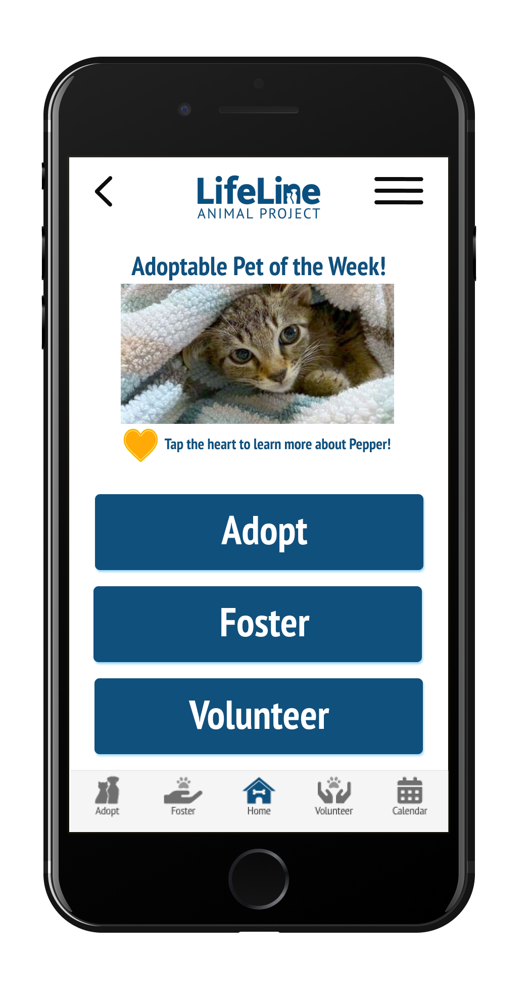

The Lifeline Animal Project App
Solving communication lags by creating an interactive interface for users.

Paw-shaped empathy map
I designed a carousel feature to assist animal lovers in finding their perfect pet. According to my team’s user research, people interested in volunteering or adopting with an ATL nonprofit, The Lifeline Animal Project, often have trouble getting in touch with volunteers. The shelter needs a low-maintenance mechanism for sharing up-to-date info about available animals. Animal lovers in Atlanta want an easy way to discover their new best friend.
The app’s home page features the three primary objectives of the organization, Adopt, Foster, or Volunteer.
If users could easily find the right pet and apply for adoption from their phones, communication between the shelter and potential foster/adoptive parents would be more productive. The mobile app provides real-time feedback for users with minimal work required of shelters employees.

Notes derived from user interview transcripts organized on a Miro board.
During user interviews, I noted that potential pet parents often developed a working list of furry friends whom they wanted to meet at the shelters. I designed a pet-matching feature that offered app visitors the opportunity to build a list of favorites by swiping through adoptable animal profiles. With an intuitive click on the orange heart, potential pet parents can collect their options and therefore visit the shelter informed. From the list page, the user can easily schedule a foster or adoption appointment.
.gif)
mid-fidelity swiping feature